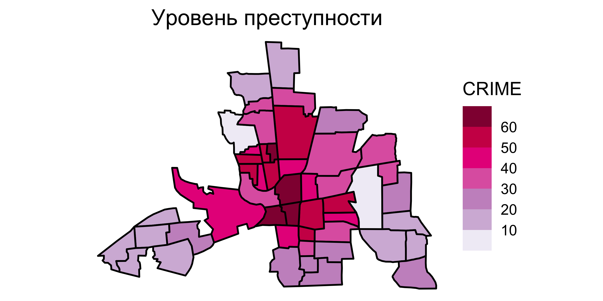
Пространственная и географически взвешенная регрессия
Основы геоинформатики: лекция 9
Пространственная зависимость
Пространственная зависимость проявляется в том, что значения величины в соседних единицах измерений оказываются связаны.
Учет этого фактора позволяет значительно усилить качество регрессионных моделей.
Как это работает?
Например, уровень преступности можно прогнозировать не только по доходам населения в районе, но и по уровню преступности в соседних районах.
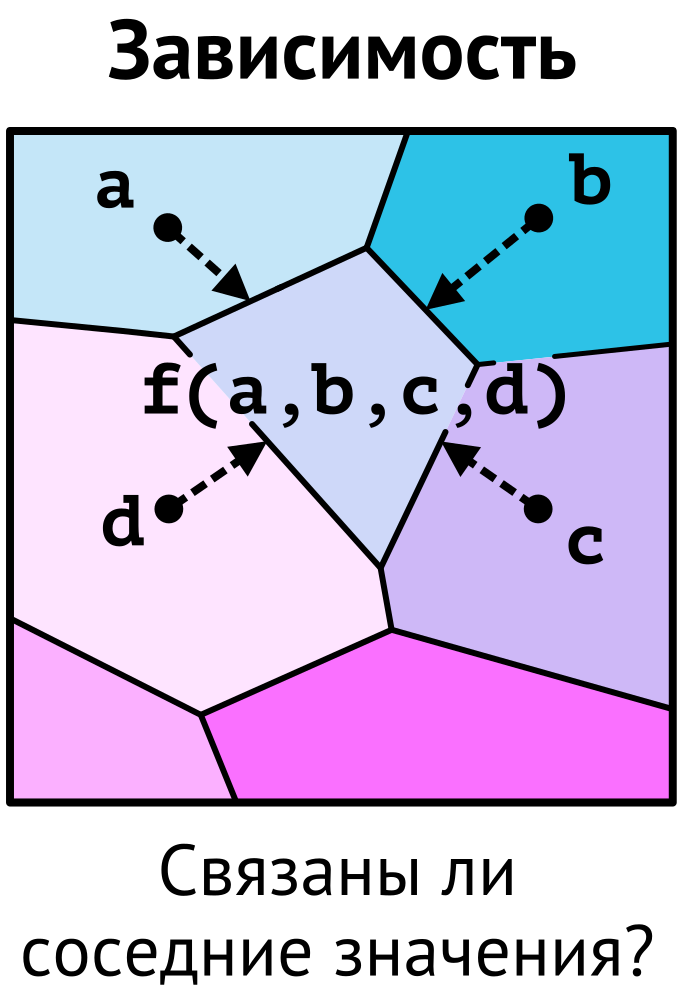
Исходные данные
Исходные данные

Исходные данные
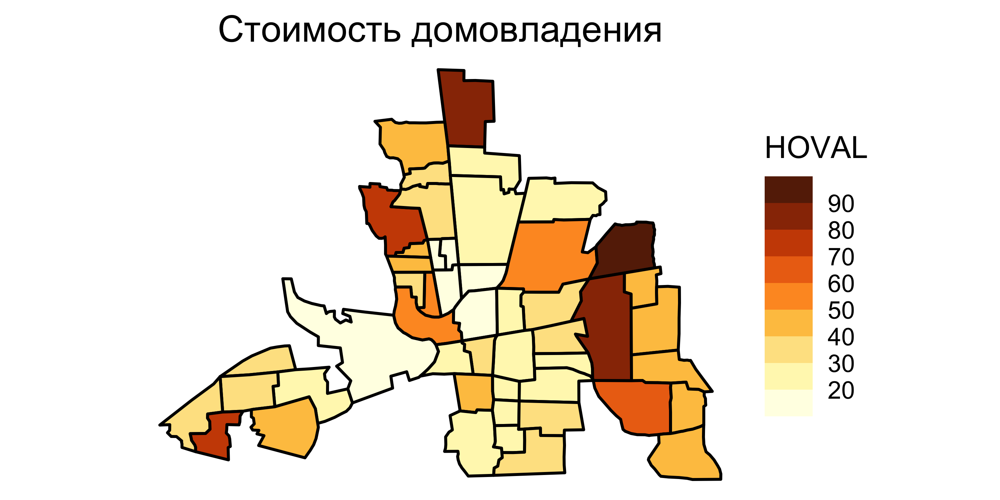
Диаграмма рассеяния
Диаграмма рассеяния показывает соотношение переменных

Линейная регрессия
Линейная регрессия дает аппроксимацию зависимости
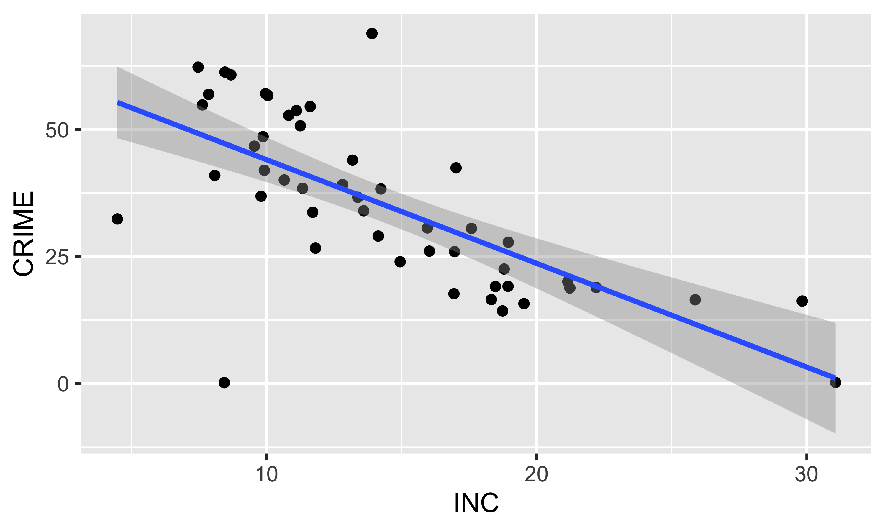
Коэффициент корреляции равен \(-0.696\).
Линейная регрессия
Линейная регрессия дает аппроксимацию зависимости
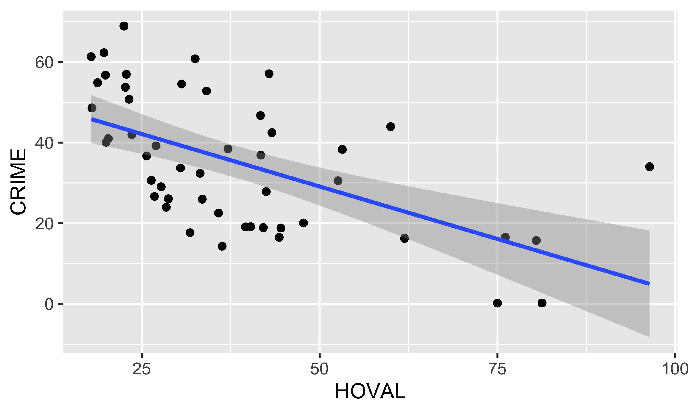
Коэффициент корреляции равен \(-0.574\).
Линейная регрессия
Линейная регрессия позволяет найти зависимость вида
\[ y = \sum_{j=0}^k \beta_j x_j \]
где \(x_0 = 1\), а остальные \(x_j\) — независимые переменные.
Например, для двух переменных:
\[ y = \beta_0 + \beta_1 x_1 + \beta_2 x_2 \]
В этом уравнении 3 неизвестных коэффициента. Для их нахождения требуется как минимум 3 измерения. Но обычно их больше, поэтому получится аппроксимация зависимости.
Линейная регрессия
Пусть исследуемый показатель, а также независимые переменные измерены в \(n\) географических местоположениях.
Для нахождения \(\beta\) составляют систему из \(i=1...n\) уравнений вида
\[ y_i = \sum_{j=0}^k \beta_j x_{ij} \]
Например, для четырех измерений:
\[ y_1 = \beta_0 + \beta_1 x_{11} + \beta_2 x_{12}\\ y_2 = \beta_0 + \beta_1 x_{21} + \beta_2 x_{22}\\ y_3 = \beta_0 + \beta_1 x_{31} + \beta_2 x_{32}\\ y_4 = \beta_0 + \beta_1 x_{41} + \beta_2 x_{42}\\ \]
Линейная регрессия
Для решения систему уравнений их записывают в матричном виде:
\[ \underbrace{\begin{bmatrix} y_1 \\ y_2 \\ y_3 \\ y_4 \\ \end{bmatrix}}_{\textbf y} = \underbrace{\begin{bmatrix} 1 & x_{11} & x_{12} \\ 1 & x_{21} & x_{22} \\ 1 & x_{31} & x_{32} \\ 1 & x_{41} & x_{42} \\ \end{bmatrix}}_{\textbf X} \underbrace{\begin{bmatrix} \beta_0 \\ \beta_1 \\ \beta_2 \end{bmatrix}}_{\boldsymbol \beta} \]
Или более компактно:
\[ \mathbf{y} = \mathbf{X} \boldsymbol\beta \]
Линейная регрессия
Если предположить, что система решена и коэффициенты \(\beta\) найдены, то в каждом измерении получается ошибка (остаток) :
\[ \epsilon_i = y_i - \sum_{j=0}^k \beta_j x_{ij} \]
Метод наименьших квадратов позволяет минимизировать сумму:
\[ \sum_{i=1}^n \epsilon_i^2 \rightarrow \min \]
Гауссом доказано, что минимум достигается решением:
\[ \boldsymbol \beta = (\mathbf X^T \mathbf X)^{-1} \mathbf X^T \mathbf y \]
Линейная регрессия
Модель линейной регрессии записывается как:
\[\mathbf{y} = \mathbf{X} \boldsymbol\beta + \boldsymbol\epsilon,\]
где:
\(\mathbf{y} = \{y_1, y_2, ... y_n\}\) — вектор измерений зависимой переменной по \(n\) объектам,
\(\mathbf{X} = \{x_{ij}\}\) — матрица размером \(n \times (k+1)\), состоящая из значений \(k\) независимых переменных для \(n\) объектов (плюс константа \(1\)).
\(\boldsymbol\beta\) — вектор коэффициентов регрессии;
\(\boldsymbol\epsilon\) — вектор случайных ошибок (остатков).
Линейная регрессия
Для модели
\[ \texttt{CRIME} = \beta_0 + \beta_1 \texttt{INC} + \beta_2 \texttt{HOVAL} \]
получается следующая диагностика:
Estimate Std. Error Pr(>|t|)
(Intercept) 68.6189611 4.7354861 9.21089e-19
INC -1.5973108 0.3341308 1.82896e-05
HOVAL -0.2739315 0.1031987 1.08745e-02Т.е. модель принимает следующий вид:
\[ \texttt{CRIME} = 68.619 -1.597~\texttt{INC} - 0.274~\texttt{HOVAL} \]
Линейная регрессия
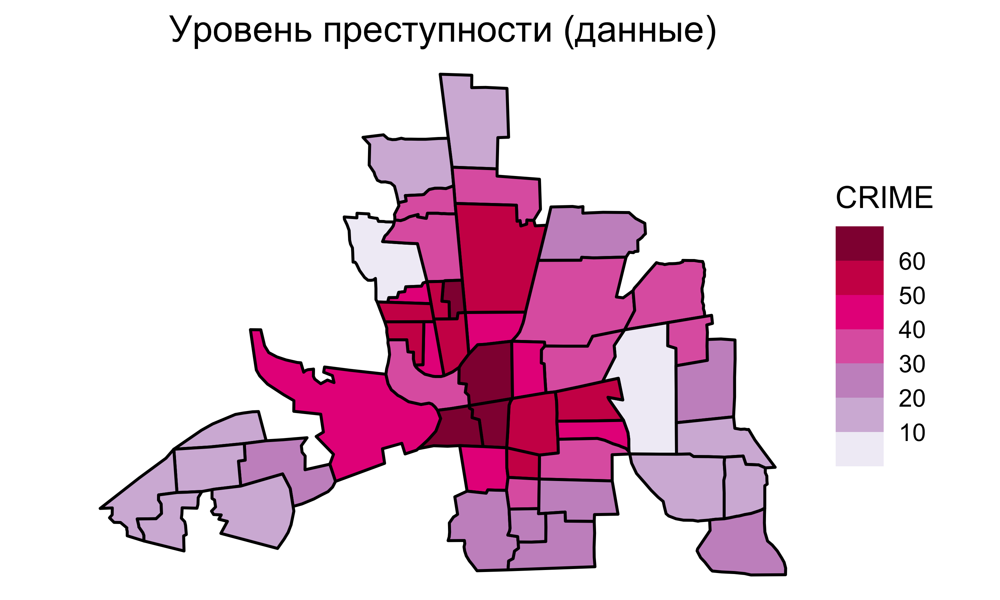
Линейная регрессия

Линейная регрессия

Остатки регрессии
Важно
Если остатки от регрессии образуют пространственный рисунок, это значит, что независимых переменных недостаточно для предсказания исследуемой величины. Необходимо учитывать пространственную зависимость.

При анализе карт остатков регрессии обращают внимание на то, меняются ли они плавно по пространству, есть ли выраженный пространственный тренд и зависимость значений соседних единиц.
Пространственная автокорреляция
- Пространственная автокорреляция (Hubert, Golledge, и Costanzo 1981)
-
Для множества \(S\), состоящего из \(n\) географических единиц, пространственная автокорреляция есть соотношение между переменной, наблюдаемой в каждой из \(n\) единиц и мерой географической близости, определенной для всех \(n(n − 1)\) пар единиц из \(S\).
Пространственная автокорреляция является количественной мерой пространственной зависимости.
Для ее вычисления необходимо формализовать понятие географического соседства: какие объекты будем считать соседними и что будет мерой их близости?
Географическое соседство
Для площадных территориальных единиц часто используется соседство по смежности, которое использует касание границ:
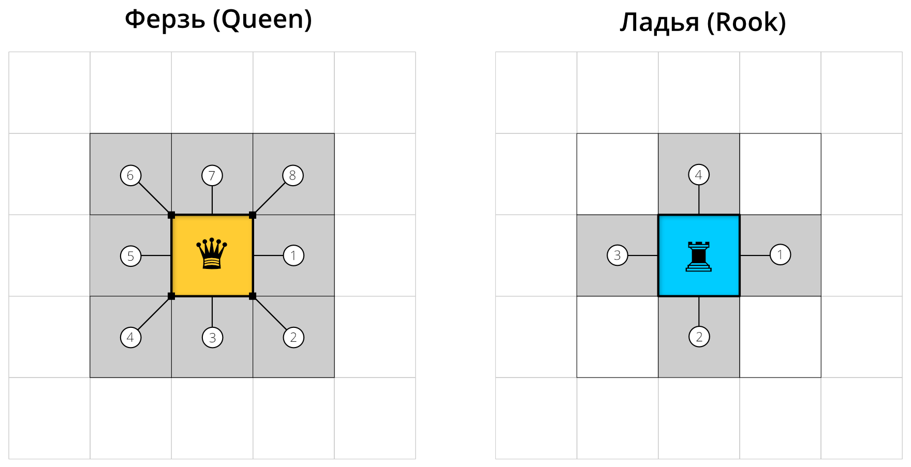
Правило ферзя: хотя бы одна общая точка на границе.
Правило ладьи: общий участок линии на границе.
Географическое соседство
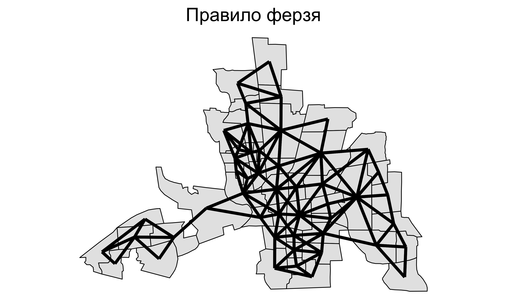
Географическое соседство
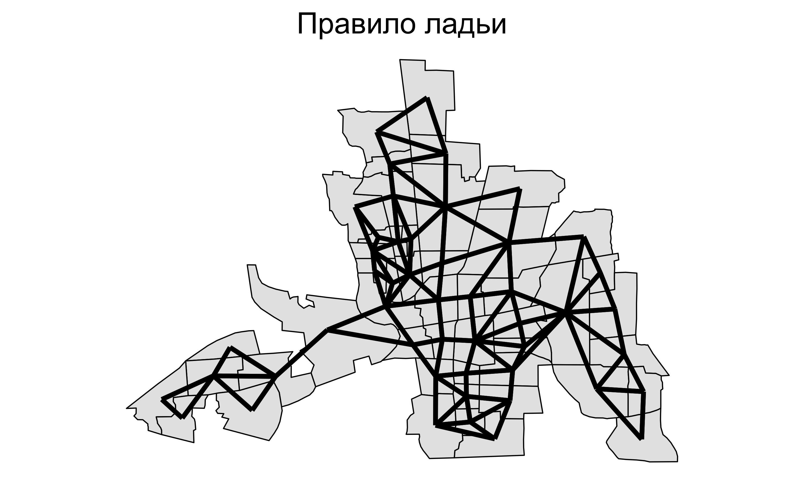
Пространственные веса
Пространственные веса характеризуют силу связи между объектами
Если единицы не являются соседними (по выбранному правилу), то пространственный вес их связи будет равен нулю. Во всех остальных случаях веса будут ненулевыми.
Бинарные веса: если связь есть, то ее вес равен единице (\(1\)), если нет — нулю (\(0\)).
Нормированные веса: вес \(j\)-й единицы по отношению к \(i\)-й равен \(1/n_i\), где \(n_i\) — количество соседей у \(i\).
Пространственные веса
Бинарные веса
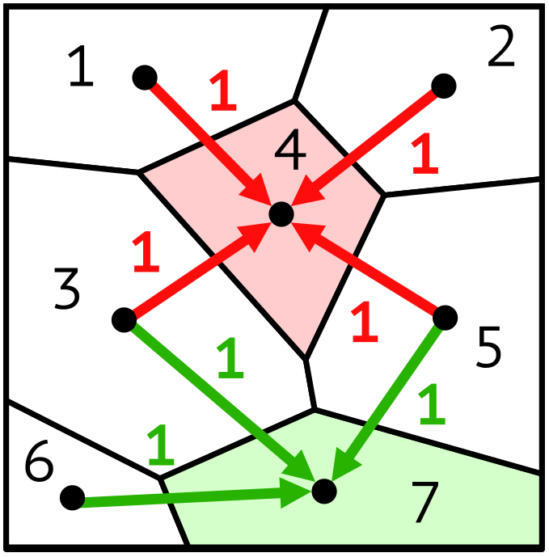
Матрица весов \(\mathbf W\)
\[ \begin{bmatrix} 0 & 0 & \color{green}{\mathbf 1} & 0 & \color{green}{\mathbf 1} & \color{green}{\mathbf 1} & 0 \\ 0 & 0 & \color{blue}{\mathbf 1} & 0 & 0 & 0 & \color{blue}{\mathbf 1} \\ 0 & \color{blue}{\mathbf 1} & \color{blue}{\mathbf 1} & \color{blue}{\mathbf 1} & 0 & 0 & \color{blue}{\mathbf 1} \\ \color{red}{\mathbf 1} & \color{red}{\mathbf 1} & \color{red}{\mathbf 1} & 0 & \color{red}{\mathbf 1} & 0 & 0 \\ \color{blue}{\mathbf 1} & 0 & 0 & \color{blue}{\mathbf 1} & \color{blue}{\mathbf 1} & \color{blue}{\mathbf 1} & \color{blue}{\mathbf 1} \\ \color{blue}{\mathbf 1} & 0 & 0 & \color{blue}{\mathbf 1} & \color{blue}{\mathbf 1} & 0 & 0 \\ 0 & \color{blue}{\mathbf 1} & \color{blue}{\mathbf 1} & \color{blue}{\mathbf 1} & 0 & 0 & 0 \\ \end{bmatrix} \]
Пространственные веса
Нормированные веса
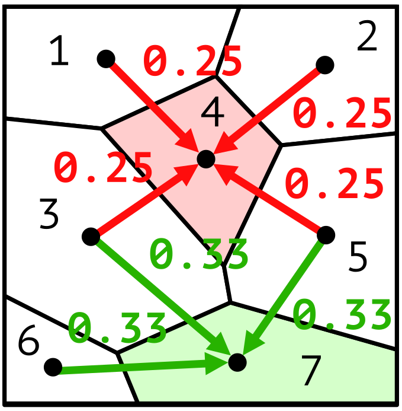
Матрица весов \(\mathbf W\)
\[ \small \begin{bmatrix} 0 & 0 & \color{green}{\mathbf{0.33}} & 0 & \color{green}{\mathbf{0.33}} & \color{green}{\mathbf{0.33}} & 0 \\ 0 & 0 & \color{blue}{\mathbf{0.5}} & 0 & 0 & 0 & \color{blue}{\mathbf{0.5}} \\ 0 & \color{blue}{\mathbf{0.25}} & \color{blue}{\mathbf{0.25}} & \color{blue}{\mathbf{0.25}} & 0 & 0 & \color{blue}{\mathbf{0.25}} \\ \color{red}{\mathbf{0.25}} & \color{red}{\mathbf{0.25}} & \color{red}{\mathbf{0.25}} & 0 & \color{red}{\mathbf{0.25}} & 0 & 0 \\ \color{blue}{\mathbf{0.2}} & 0 & 0 & \color{blue}{\mathbf{0.2}} & \color{blue}{\mathbf{0.2}} & \color{blue}{\mathbf{0.2}} & \color{blue}{\mathbf{0.2}} \\ \color{blue}{\mathbf{0.33}} & 0 & 0 & \color{blue}{\mathbf{0.33}} & \color{blue}{\mathbf{0.33}} & 0 & 0 \\ 0 & \color{blue}{\mathbf{0.33}} & \color{blue}{\mathbf{0.33}} & \color{blue}{\mathbf{0.33}} & 0 & 0 & 0 \\ \end{bmatrix} \normalsize \]
Пространственные веса

Пространственные веса
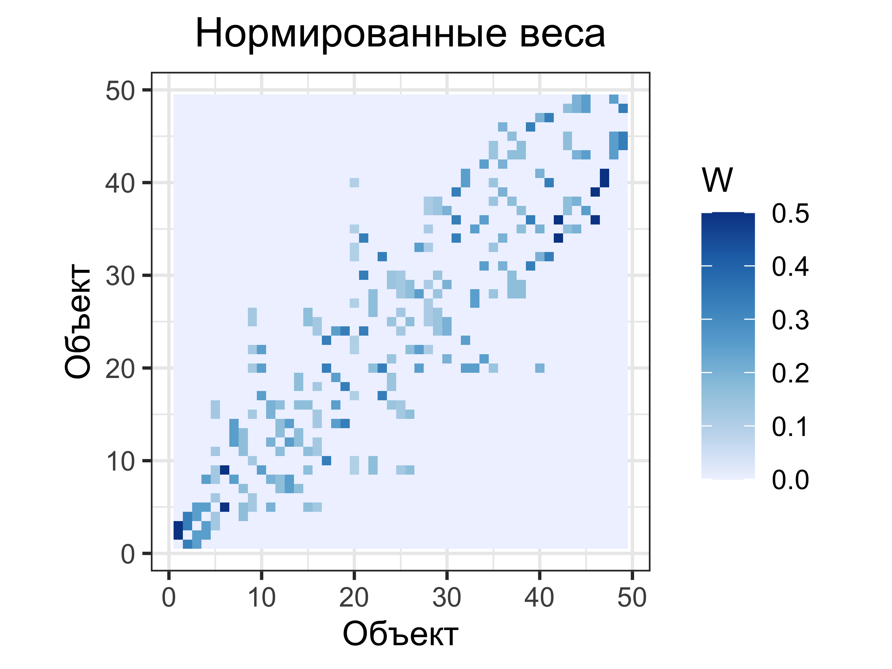
Коэффициент корреляции Пирсона
Коэффициент корреляции Пирсона вычисляется как:
\[r_{xy} = \frac{\sum_{i=1}^{n}(x_i - \bar x)(y_i - \bar y)}{\sqrt{\sum_{i=1}^{n}(x_i - \bar x)^2} \sqrt{\sum_{i=1}^{n}(y_i - \bar y)^2}}\] где:
\(X = \{x_i\}\) и \(Y = \{y_i\}\) — две выборки значений;
\(\bar x\) и \(\bar y\) — средние арифметические.
Линейная зависимость
Коэффициент корреляции Пирсона показывает зависимость только для переменных, имеющих связь линейного характера
Индекс Морана
Пространственную автокорреляцию можно оценить путем вычисления индекса Морана (Moran’s I) (Moran 1950):
\[I = \frac{n \sum^n_{i=1} \sum^n_{j=1} w_{ij} (y_i - \bar y)(y_j - \bar y)}{ \Big[\sum^n_{i=1} \sum^n_{j=1} w_{ij}\Big] \Big[\sum^n_{i=1} (y_i - \bar y)^2\Big]}\]
где:
- \(n\) — количество единиц,
- \(w_{ij}\) — вес пространственной связи между \(i\)-й и \(j\)-й единицей,
- \(y_i\) — значение в \(i\)-й единице,
- \(\bar y\) — выборочное среднее по всем единицам
Индекс Морана (Moran’s I)
Индекс Морана для нормально распределенных данных лежит в диапазоне от \(-1\) до \(1\):
\(+1\) означает детерминированную прямую зависимость — группировку схожих (низких или высоких) значений;
\(0\) означает абсолютно случайное распределение;
\(-1\) означает детерминированную обратную зависимость — идеальное перемешивание низких и высоких значений, напоминающее шахматную доску.
Математическое ожидание индекса Морана для случайных данных равно \(E[I] = -1/(n-1)\)
Индекс Морана

Индекс Морана равен \(0.500\)
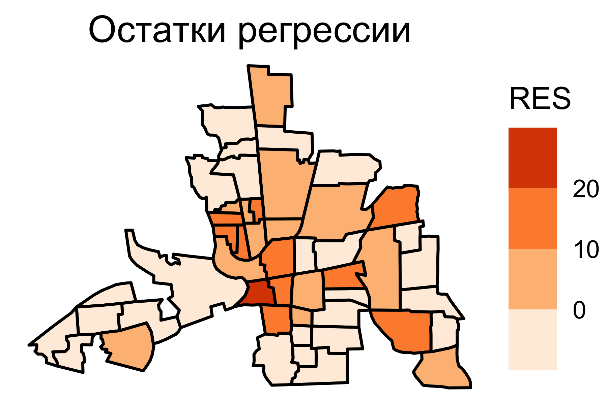
Индекс Морана равен \(0.222\)
Поскольку остатки регрессии по-прежнему автокоррелированы, можно сделать вывод о том, что независимые переменные не объясняют полностью величину преступности.
Пространственная регрессия
Чтобы учесть пространственную автокорреляцию зависимой переменной, в модель линейной регрессии добавляется компонента авторегрессии \(\rho\mathbf{Wy}\) (Anselin 1988):
\[\mathbf{y} = \underbrace{\mathbf{X} \mathbf{\beta}}_{тренд} + \underbrace{\color{red}{\rho\mathbf{Wy}}}_{сигнал} + \underbrace{\mathbf{\epsilon}}_{шум},\]
\(\rho\) — коэффициент авторегрессии, отражающий вклад пространственной автокорреляции;
\(\mathbf{W}\) — матрица пространственных весов.
Полученная модель называется пространственной регрессией.
Тренд, сигнал и шум называются предикторами.
Пространственная регрессия
Пространственную регрессию можно представить как обычную регрессию. Выполним преобразования:
\[ \mathbf{y} = \mathbf{X} \mathbf{\beta} + \rho\mathbf{Wy} + \mathbf{\epsilon}\\ \mathbf{y} - \rho\mathbf{Wy} = \mathbf{X} \mathbf{\beta} + \mathbf{\epsilon}\\ (\mathbf{I} - \rho\mathbf{W})\mathbf{y} = \mathbf{X} \mathbf{\beta} + \mathbf{\epsilon}\\ \color{red}{\boxed{\color{blue}{\mathbf{y} = (\mathbf{I} - \rho\mathbf{W})^{-1}\mathbf{X}\mathbf{\beta} + (\mathbf{I} - \rho\mathbf{W})^{-1}\mathbf{\epsilon}}}} \] Коэффициенты \(\beta\) и \(\rho\) находятся по методу наименьших квадратов.
Для нашего случая модель будет иметь вид:
\[ \texttt{CRIME} = 45.603 -1.049~\texttt{INC} - 0.266~\texttt{HOVAL} + 0.423~W~\texttt{CRIME} \]
Пространственная регрессия
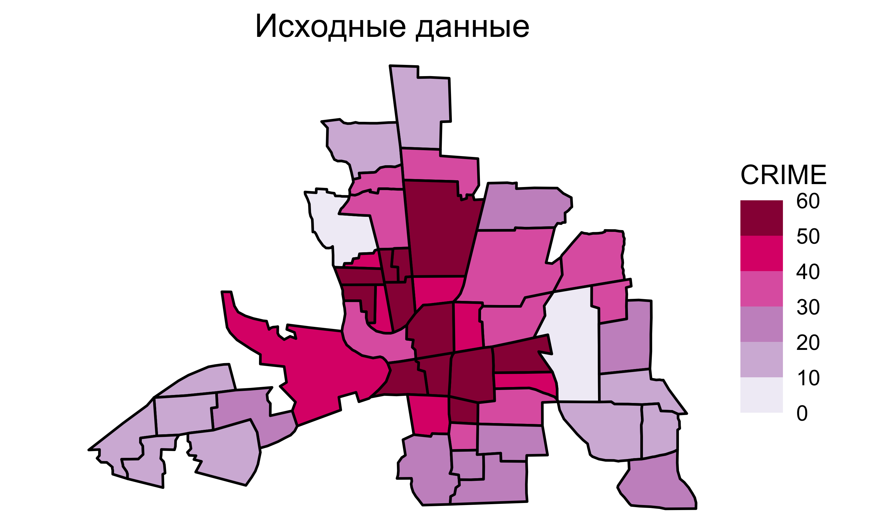
Пространственная регрессия

Пространственная регрессия
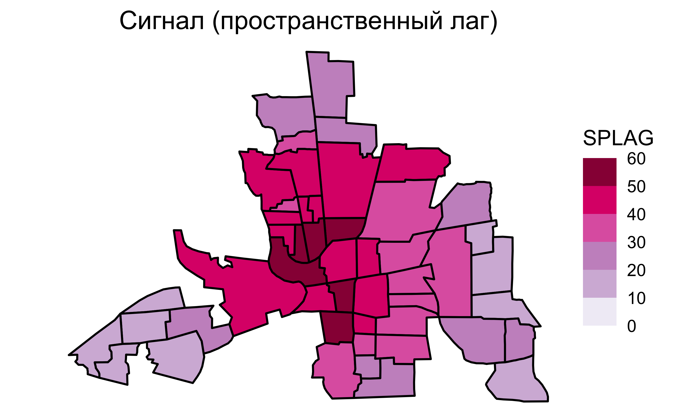
Пространственная регрессия

Пространственная регрессия
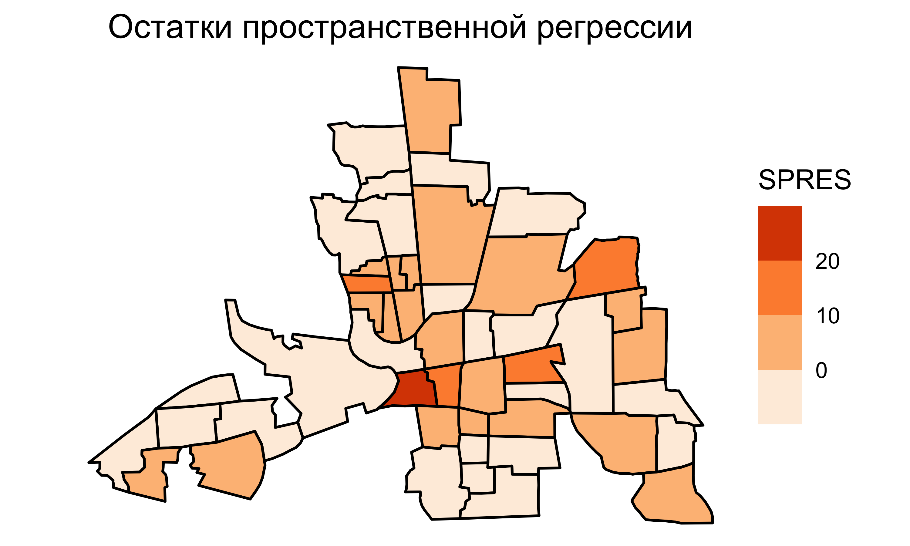
Остатки пространств. регрессии
Индекс Морана для остатков пространств. регрессии равен \(0.033\).
Автокорреляционная составляющая практически полностью учтена в модели пространственной регрессии. Предсказательная сила модели улучшена.
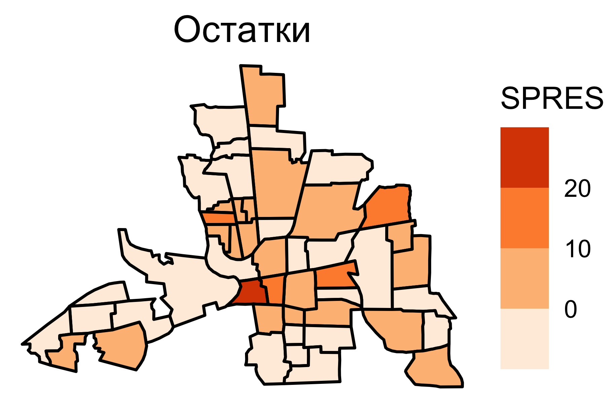
Пространственная гетерогенность
Пространственная гетерогенность проявляется в том, что зависимости между переменными меняются по пространству.
Учет этого фактора позволяет значительно усилить качество регрессионных моделей.
Как это работает?
Например, стоимость недвижимости может по-разному реагировать на увеличение жилплощади и количества комнат в разных городских районах.
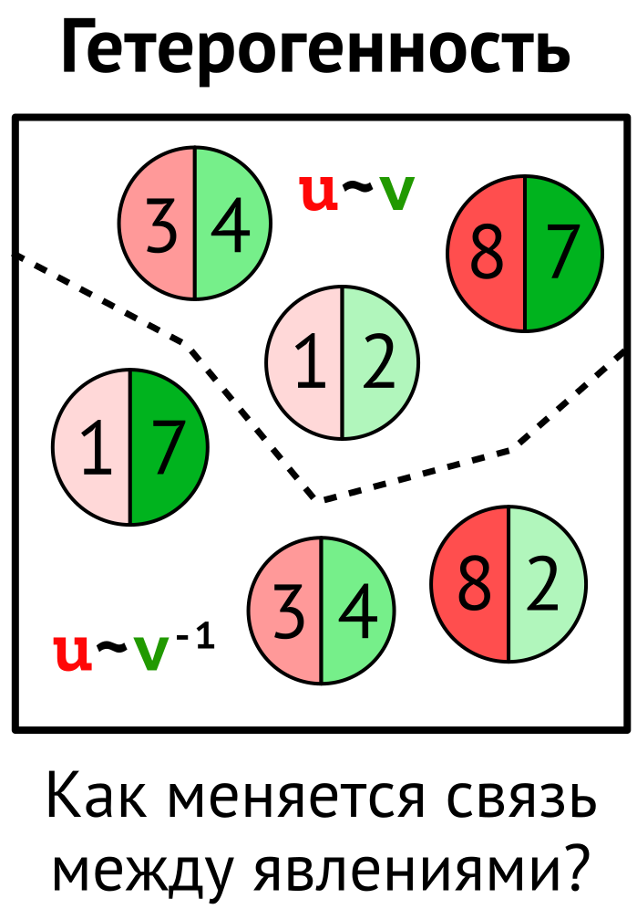
Исходные данные
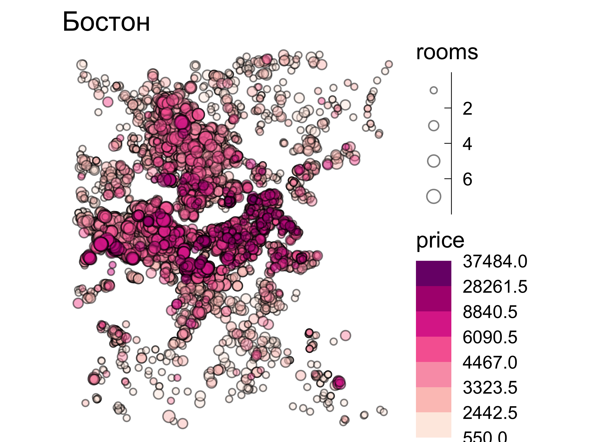
Обычная регрессия
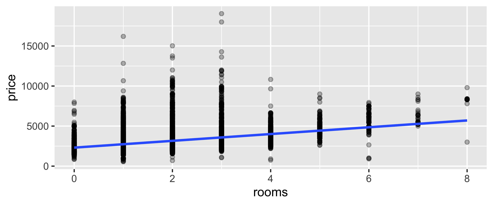
Коэффициент детерминации \(R^2 = 0.1483\). Регрессионная модель:
\[ \texttt{price} = 2319.2 +421.8~\texttt{rooms} \]
Географич. взвешенная регрессия
В стандартной модели линейной регрессии параметры \(\beta\) предполагаются постоянными. Для \(i\)-й локации решение выглядит следующим образом:
\[y_i = \beta_0 + \beta_1 x_{1i} + \beta_2 x_{2i} + ... + \beta_k x_{ki} + \epsilon_i\]
В географически взвешенной регрессии (ГВР) параметры \(\beta\) определяются для каждой локации (Fotheringham, Brunsdon, и Charlton 2002):
\[y_i = \beta_{0i} + \beta_{1i} x_{1i} + \beta_{2i} x_{2i} + ... + \beta_{ki} x_{ki} + \epsilon_i\]
В этом случае область оценки параметров \(\mathbf{\beta}\) ограничивается некой окрестностью точки \(i\).
Весовая функция
Далёкие точки должны иметь меньший вес при вычислении коэффициентов. Например, для гауссовой весовой функции:
\[ w_{ij} = \operatorname{exp}\{-\frac{1}{2} (d_{ij}/h)^2\}, \]
\(w_{ij}\) — вес, который будет иметь \(j\)-я точка при вычислении коэффициентов регрессии в \(i\)-й точке;
\(d_{ij}\) расстояние между ними;
\(h\) — полоса пропускания
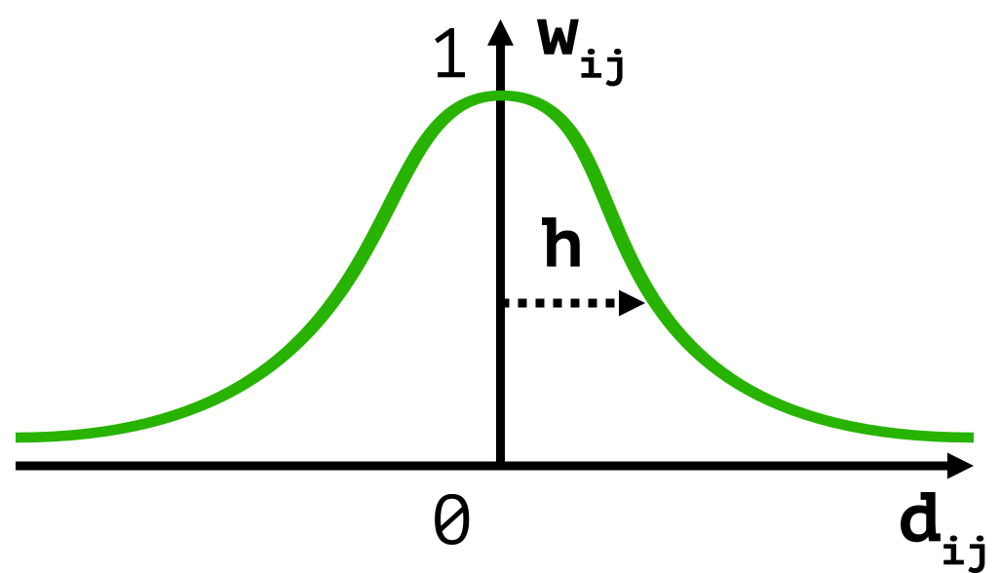
Весовые функции
В случае фиксированной весовой функции окрестность всегда имеет фиксированную полосу пропускания:
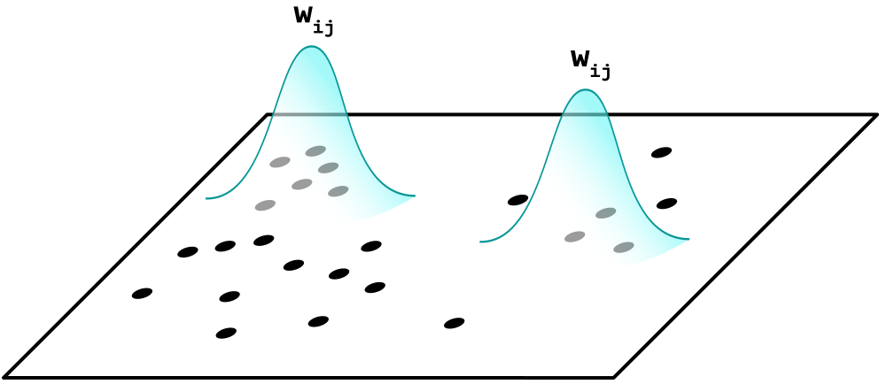
Весовые функции
В случае адаптивной весовой функции полоса пропускания определяется \(N\) ближайшими точками. Например для \(N = 5\):
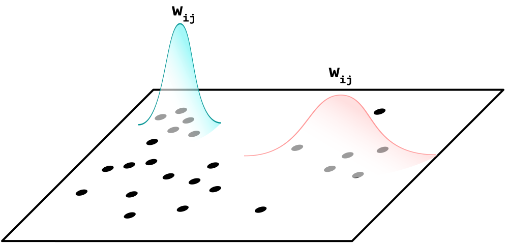
Модель ГВР
В случае модели ГВР получается множество коэффициентов регрессии. По ним можно узнать статистику
Min. 1st Qu. Median 3rd Qu. Max.
Intercept 198.56 1785.17 2054.43 2361.79 3485.2
rooms -409.97 471.77 524.01 650.52 1299.1
Kernel function: gaussian
Fixed bandwidth: 1000
Regression points: the same locations as observations are used.
Distance metric: Euclidean distance metric is usedКоэффициент детерминации \(R^2 = 0.367\).
Коэффициенты ГВР
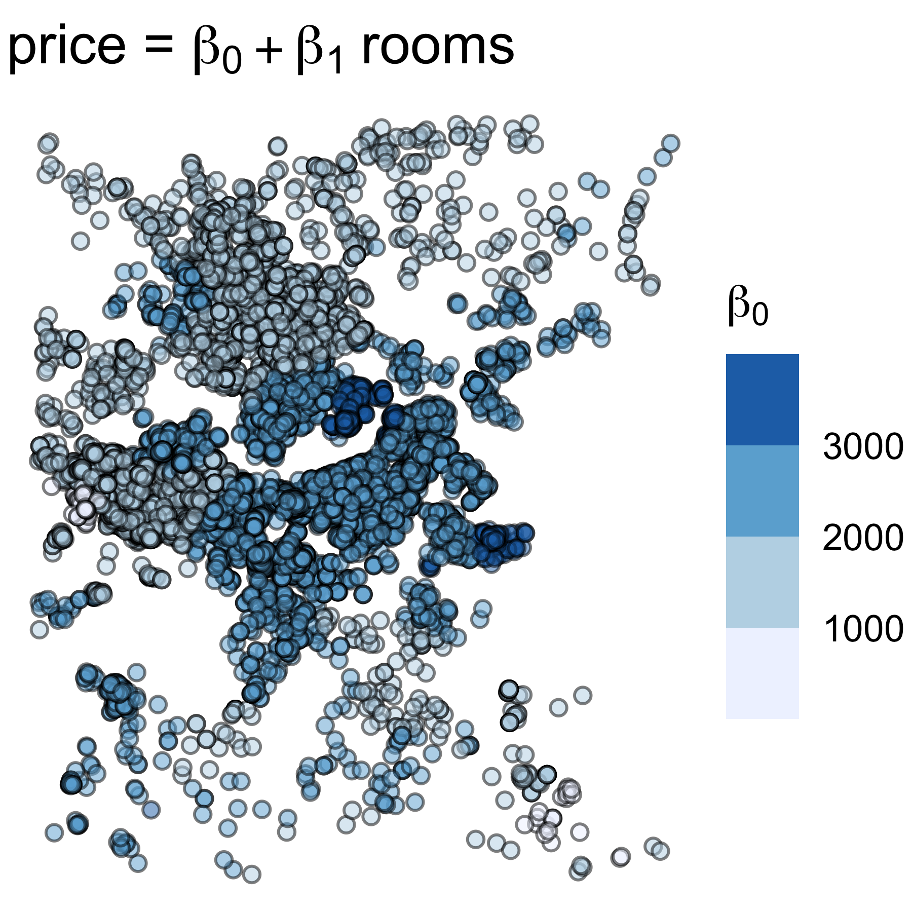
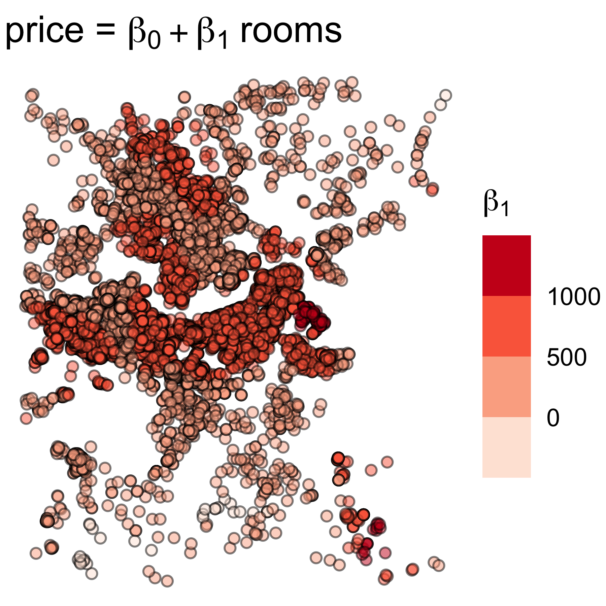
Пространственная картина распределения коэффициентов регрессии подтверждает гипотезу о гетерогенности.
Словарик
Линейная регрессия
Метод наименьших квадратов
Диаграмма рассеяния
Остатки регрессии
Простр. автокорреляция
Пространственные соседи
Пространственные веса
Пространственная регрессия
Географически взвешенная регрессия (ГВР)
Полоса пропускания
Linear regression
Least squares method
Scatterplot
Regression residuals
Spatial autocorrelation
Spatial neighbours
Spatial weights
Spatial regression
Geographically weighted regression (GWR)
Bandwidth
Библиография
Anselin, Luc. 1988. Spatial Econometrics: Methods and Models. Dordrecht Statistics: Springer Netherlands. https://doi.org/10.1007/978-94-015-7799-1.
Fotheringham, Stewart A., Chris Brunsdon, и Martin Charlton. 2002. Geographically weighted regression: the analysis of spatially varying relationships. Chichester, UK: Wiley. https://doi.org/10.1007/978-3-642-03647-7.
Hubert, L. J., R. G. Golledge, и C. M. Costanzo. 1981. «Generalized Procedures for Evaluating Spatial Autocorrelation». Geographical Analysis 13 (3): 224–33. https://doi.org/10.1111/j.1538-4632.1981.tb00731.x.
Moran, P A P. 1950. «Notes on Continuous Stochastic Phenomena». Biometrika 37 (1/2): 17–23. https://doi.org/10.2307/2332142.